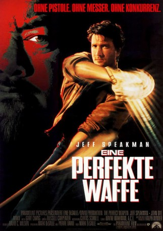

#11485 Eine Perfekte Waffe
Alternativ: The Perfect Weapon (Englischer Titel)
 
 IMDB-Wertung: 6.0 / 10
IMDB-Wertung: 6.0 / 10  Tomatometer: 45
Tomatometer: 45  Metascore: 0
Metascore: 0 
Die koreanische Mafia will den Ladenbesitzer Kim (Mako) dazu zwingen, ihre Drogen in seinem Laden zu lagern, aber Kim weigert sich. Als sie ihn mit Gewalt zwingen wollen, kommt Kim sein alter Freund Jeff Sanders (Jeff Speakman), Meister im Kenpo-Karate, zu Hilfe und vertreibt die Koreaner. Kim will trotzdem am nächsten Tag mit den Mafiosi verhandeln, doch in der Nacht wird er von einem koreanischen Auftragsmörder umgebracht. Jeff schwört Rache, doch seine illegalen Nachforschungen werden brisant, als sein kleiner Bruder Adam (John Dye), inzwischen Polizist, die Ermittlungen übernimmt...
Jahr: 1991
Dauer: 84 Minuten
FSK: 18
Land: USA Studio: Paramount PicturesTonspuren: DD2.0 - ,
Untertitel: Deutsch,
Auflösung: 1080p (1920x1080) Größe: 6707 MB
Genre: Action, Drama, Krimi
Regisseur: Mark DiSalle
Drehbuch: David C. Wilson
Soundtrack: Gary Chang
Darsteller:
- Jeff Speakman als Jeff Sanders
- John Dye als Det. Adam Sanders
 Mako als Kim
Mako als Kim James Hong als Yung
James Hong als Yung- Mariska Hargitay als Jennifer
 Dante Basco als Jimmy Ho
Dante Basco als Jimmy Ho Beau Starr als Capt. Carl Sanders
Beau Starr als Capt. Carl Sanders Professor Toru Tanaka als Tanaka
Professor Toru Tanaka als Tanaka Clyde Kusatsu als Detective Wong
Clyde Kusatsu als Detective Wong Cary-Hiroyuki Tagawa als Kai
Cary-Hiroyuki Tagawa als Kai- Craig Ng als Ponytail
 John Koyama als Porsche
John Koyama als Porsche Roger Yuan als Diamond
Roger Yuan als Diamond James Lew als Crewcut
James Lew als Crewcut Leo Lee als Bandana
Leo Lee als Bandana Chris Tashima als Bag Man
Chris Tashima als Bag Man- Tom Elliott als Cop
 Philip Tan als Desk Guard
Philip Tan als Desk Guard Branscombe Richmond als Bartender
Branscombe Richmond als Bartender Carl Ciarfalio als Man in Alley
Carl Ciarfalio als Man in Alley- Cole S. McKay als Man in Alley
 Thomas Rosales Jr. als Man in Alley
Thomas Rosales Jr. als Man in Alley- Gregory J. Barnett als Killed Cop (uncredited)
 Al Goto als Yung's Guard (uncredited)
Al Goto als Yung's Guard (uncredited) Jeff Imada als Wo Sam Guard (uncredited)
Jeff Imada als Wo Sam Guard (uncredited) Al Leong als Man in Croc-Pit Bar (uncredited)
Al Leong als Man in Croc-Pit Bar (uncredited)- Will Leong als Man in Croc-Pit Bar (uncredited)
- Seth Sakai als Master Lo
- Tom Hermann als Jeff - Age 17
- Micah Roberts als Jeff - Age 11
- Ryan Bohannon als Adam - Age 6
- Justin Webb als Adam - Age 12
- Nikki Feemster als Jennifer - Age 9
- Shaun Shimoda als Kwong
- Yoshimi Imai als Wo Sam
- Ralph Ahn als Gi
- Troy Fromin als Erickson
- Leland Sun als KK Guard
- Ray Sua als Tattoo
 Bill Saito als Old Man
Bill Saito als Old Man- Cha Cha Sandoval-McMahon als Lady at Bank
- Don Pulford als Cop Partner
- Gary Price als Cop Driver
- Al Jones als Cop
- Mario Roberts als Cop
- Francine Lee als Snake Lady
- Phil Chong als Elevator Guard
- Roger Ito als Dance Couple
- Simone Boisseree als Dance Couple
- Lou Voiler als Kaplan
Datei: X:\NEU\Perfekte Waffe, Eine (1991, FSK18, 1920x1080).mkv seit 16.07.2019
 Es gibt insgesamt 187 Filme in der Gruppe 'NEU'
Es gibt insgesamt 187 Filme in der Gruppe 'NEU'